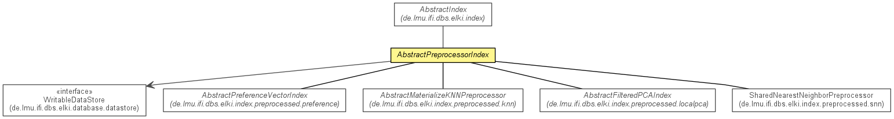

de.lmu.ifi.dbs.elki.index.preprocessed
Class AbstractPreprocessorIndex<O,R>
java.lang.Object
 de.lmu.ifi.dbs.elki.index.AbstractIndex<O>
de.lmu.ifi.dbs.elki.index.preprocessed.AbstractPreprocessorIndex<O,R>
de.lmu.ifi.dbs.elki.index.AbstractIndex<O>
de.lmu.ifi.dbs.elki.index.preprocessed.AbstractPreprocessorIndex<O,R>
- Type Parameters:
O - Object typeR - Stored data type
- All Implemented Interfaces:
- Index, Result
- Direct Known Subclasses:
- AbstractFilteredPCAIndex, AbstractMaterializeKNNPreprocessor, AbstractPreferenceVectorIndex, AbstractSubspaceProjectionIndex, SharedNearestNeighborPreprocessor
public abstract class AbstractPreprocessorIndex<O,R>
- extends AbstractIndex<O>

Abstract base class for simple preprocessor based indexes, requiring a simple
object storage for preprocessing results.
|
Method Summary |
protected abstract Logging |
getLogger()
Get the classes static logger. |
| Methods inherited from class java.lang.Object |
clone, equals, finalize, getClass, hashCode, notify, notifyAll, toString, wait, wait, wait |
storage
protected WritableDataStore<R> storage
- The data store
AbstractPreprocessorIndex
public AbstractPreprocessorIndex(Relation<O> relation)
- Constructor.
getLogger
protected abstract Logging getLogger()
- Get the classes static logger.
- Returns:
- Logger